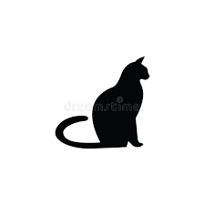
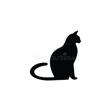

Dogs
 

Cats

Birds
Types of Pets Available for Adoption
- Dogs: Dogs are a popular choice for pet adoption and come in a variety of breeds and sizes.
- Cats: Cats are also a popular choice and make great indoor pets.
- Birds: Birds can make great pets for those who have the time and resources to care for them properly.
AnimalCare
This provides information on how to care for different types of animals, including their diet, exercise, grooming, and medical needs. You could also include information on how to identify and treat common health issues that pets may face.
Learn More